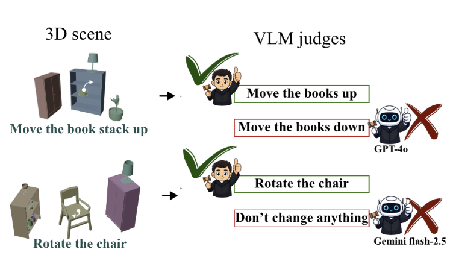
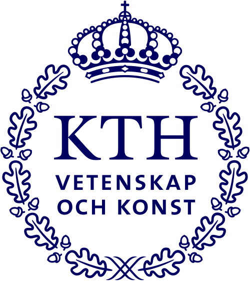
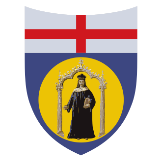

Marco Schouten
Ciao, I am a PhD student in Computer Science at DTU and a member of the Belongie Lab, advised by Prof Dim Papadopoulos and Prof Serge Belongie.
Previously, I graduated with my Master's degree at KTH Stockholm and my Bachelor's degree at the University of Genoa. I am currently at Adobe Paris as a research scientist intern, working in Prof Tamy Boubekeur's team.
In my free time, I enjoy drawing spending time outdoors, and a good tennis rally.
I am looking for permanent industry positions starting in spring 2027.
[Email] marscho [at] dtu [dot] dk [Google Scholar] [GitHub]

News
- [2026] Research Scientist internship at Adobe Paris
- [2025] Attended the ICVSS 2025 summer school in Sicily, Italy.
- [2025] Paper accepted at CVEU@CVPR.
- [2023] Started my PhD at DTU.
Research
My work focuses on building controllable LLMs for creating and editing 2D and 3D visual content.
Publications
|
 |
EditJudge-Bench: Auditing VLM Image-Edit Judges with Synthetic Ground Truth Jens Parslov, Marco Schouten and Dim P. Papadopoulos NeurIPS 2026 |

|
HiddenObjects: Diffusion-Distilled Dense Spatial Priors for Object Placement Marco Schouten, Ioannis Siglidis, Serge Belongie and Dim P. Papadopoulos Preprint |

|
Sherlock Your Queries: Learning to Ask the Right Questions for Dialogue-Based Retrieval Dong Yun*, Marco Schouten* and Dim P. Papadopoulos (* equal contribution) Preprint |

|
Instruction-Guided Precise Image Editing Using Multimodal LLMs Marco Schouten, M. Onurcan Kaya, Serge Belongie and Dim P. Papadopoulos CVEU Workshop @ CVPR 2025 — |
Education
|
|
PhD Candidate: Technical University of Denmark (Denmark)
|
|
 |
Master: KTH Royal Institute of Technology (Sweden)
|
|
 |
Bachelor: University of Genoa (Italy)
|